Palpeur sans fil
1. Charge : le palpeur sans fil doit être chargé lors de sa première utilisation ou après une longue période sans utilisation de la machine (plus d'une semaine). Le palpeur sans fil commence automatiquement à se charger après la mise sous tension de la machine. Le voyant jaune de charge s'allume puis s'éteint lorsque la charge est complète. Vous pouvez commencer à l'utiliser lorsque la tension atteint 3.7v, sans attendre la charge complète.
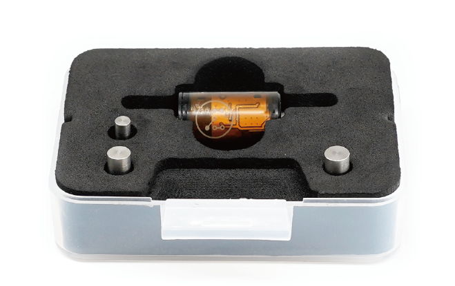
2. Palpage : lorsque le palpeur sans fil est déclenché, le voyant vert s'allume.
3. Indicateur laser : appuyez deux fois sur le palpeur sans fil pour allumer l'indicateur laser (utilisé pour le réglage manuel de l'outil sur les axes XY). L'indicateur laser s'allume aussi automatiquement lors du balayage de la zone du parcours.
4. Appairage : le palpeur sans fil fourni avec la machine est déjà appairé par défaut ; vous pouvez l'utiliser directement. Pour les palpeurs sans fil de rechange en option, vous devez d'abord les appairer :
4.1. Ouvrez la fenêtre contextuelle d'appairage du palpeur sans fil dans le logiciel de contrôle.
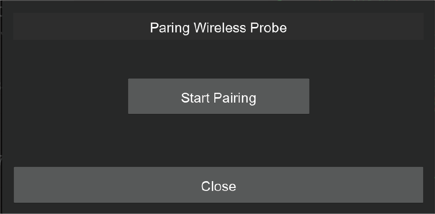
4.2. Cliquez sur le bouton « Start Pairing » ; la machine passe en mode appairage. （Vous disposez de 30 secondes pour terminer l'appairage ; recommencez si le délai est dépassé.）
4.3. Déclenchez le palpeur sans fil pendant environ 10 secondes, jusqu'à ce que le voyant LED vert commence à clignoter rapidement, ce qui signifie que le palpeur sans fil est en mode appairage.
4.4. Si l'appairage réussit, le voyant LED vert clignote lentement 5 fois.
4.5. Si l'appairage échoue, le voyant LED s'éteint. Recommencez.
4.6. Vous pouvez ouvrir la fenêtre de diagnostic pour vérifier si le palpeur sans fil a été appairé correctement.
5. Test : ouvrez la liste déroulante de la barre d'état et sélectionnez la fonction de diagnostic ; la boîte de dialogue d'état du diagnostic s'affiche. Appuyez sur le palpeur sans fil : vous verrez que le signal du palpeur est déclenché, ce qui indique que le palpeur sans fil fonctionne.
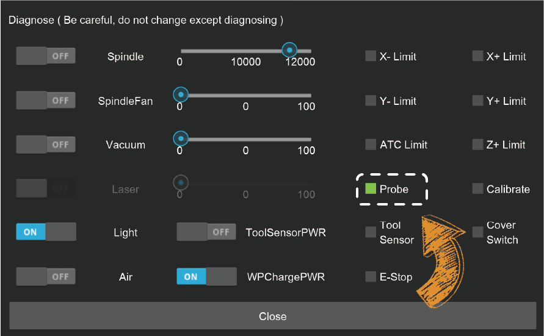
Remarque : contrairement au choc d'une fraise, le choc du palpeur sans fil peut gravement l'endommager. Utilisez le palpeur sans fil avec prudence. Observez toujours son parcours et arrêtez la machine dès que vous trouvez un obstacle afin de le protéger.
Sonde manuelle
Cas d'utilisation : normalement, le palpeur sans fil et le système de positionnement fondé sur les points d'ancrage suffisent pour la plupart des travaux. Mais si vous devez placer la pièce ailleurs qu'au point d'ancrage et trouver précisément l'origine, vous pouvez utiliser le palpeur manuel.
Utilisation :
1. Branchez le palpeur manuel dans la prise à 2 broches située sur le côté gauche du plateau de la machine.
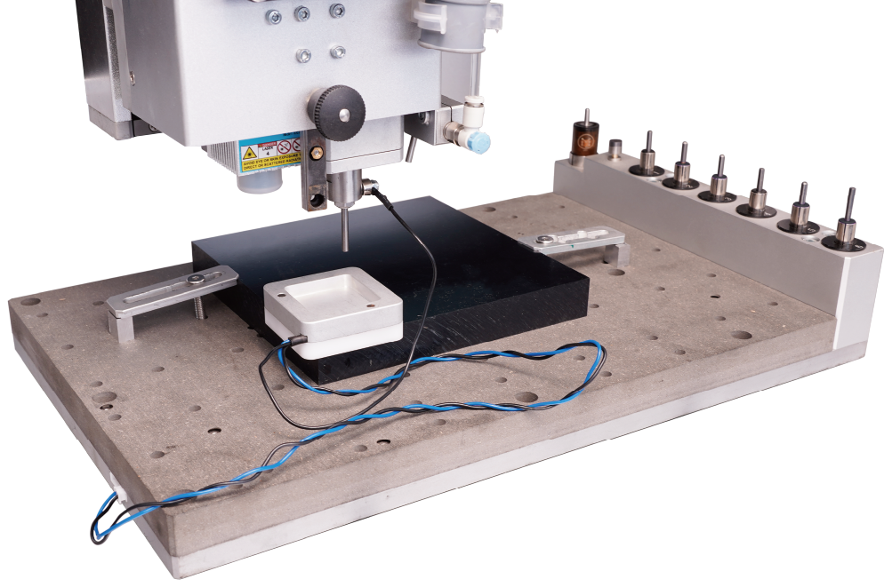
2. Placez fermement la sonde manuelle (côté plastique blanc) contre le coin inférieur gauche de la pièce.
3. Déplacez la machine afin que la fraise se trouve dans la zone carrée de la sonde manuelle.
4. Fixez l'extrémité magnétique de la sonde manuelle à l'arbre de broche comme indiqué.
5. Cliquez sur la fonction « XYZ Probe » et définissez le décalage de hauteur et le diamètre de la fraise. (Il est recommandé d'utiliser la tige de test de 3.175mm que nous avons fournie pour le palpage afin d'appliquer directement les paramètres par défaut.)
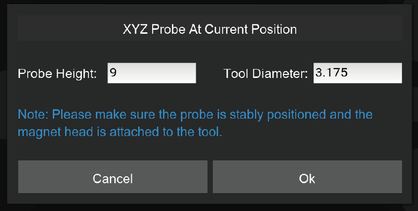
6. Cliquez sur OK pour démarrer le palpage.
Remarque : le palpage manuel définit automatiquement l'origine des axes X, Y et Z. Il n'est pas nécessaire de les régler à nouveau.
Bouton d'arrêt d'urgence
Comme avec le bouton principal situé à l'avant de la Carvera, vous pouvez appuyer rapidement sur le bouton d'arrêt d'urgence en cas de situation imprévue pour arrêter la machine ; celle-ci s'arrête immédiatement et passe en état d'alarme. Vous devez déverrouiller la machine dans le logiciel de contrôle avant de continuer à l'utiliser. Le bouton d'arrêt d'urgence est autobloquant : tournez-le simplement dans le sens horaire pour le déverrouiller.
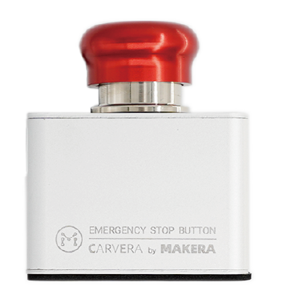
Module d'assistance pneumatique
Cas d'utilisation : le module d'assistance pneumatique a deux usages principaux. Le premier est l'évacuation des copeaux et le refroidissement pendant l'usinage CNC, en particulier lors de l'usinage de matériaux métalliques. Le second consiste à empêcher le matériau de brûler pendant la gravure laser afin d'améliorer sa qualité.
Installation : une petite pompe à air ordinaire suffit largement pour le module d'assistance pneumatique Carvera; insérez le tuyau de 8 mm dans le raccord à l'arrière de la machine et vérifiez qu'il est fermement fixé.
Commande de l'air :
1. Utilisez les commandes GCode M7 et M9 pour contrôler l'ouverture et la fermeture de l'interrupteur pneumatique principal.
2. Réglez le bouton bleu à l'extrémité du module d'assistance pneumatique pour contrôler le débit d'air : tirez le bouton pour le régler et appuyez dessus pour le verrouiller. Tournez le bouton dans le sens horaire pour réduire le débit et dans le sens antihoraire pour l'augmenter.
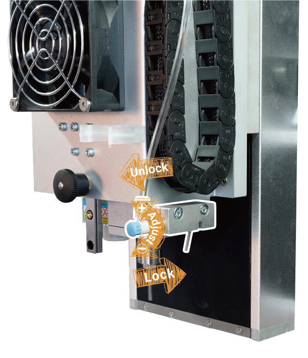
3. L'angle de la buse d'air peut être réglé pour s'adapter aux différentes longueurs d'outil et positions de mise au point du laser.
Remarque : le module d'assistance pneumatique et le module de collecte des poussières ne peuvent pas fonctionner en même temps. Retirez donc la jupe d'aspiration et désactivez la collecte automatique des poussières avant d'utiliser le module d'assistance pneumatique. Lorsque ce module n'est pas utilisé pendant une longue période, éteignez la pompe à air. Veillez à ce que la buse d'air n'interfère pas avec la jupe d'aspiration ni avec le mécanisme du changeur d'outil automatique.
Outils de bridage
Le bridage est l'une des étapes les plus importantes lors de l'utilisation d'une machine CNC. La Carvera fournit deux méthodes de bridage et les outils correspondants pour s'adapter à différents types, formes et tailles de pièces. Pendant le bridage, vous pouvez également positionner précisément la pièce à l'aide du système de points d'ancrage de la Carvera.
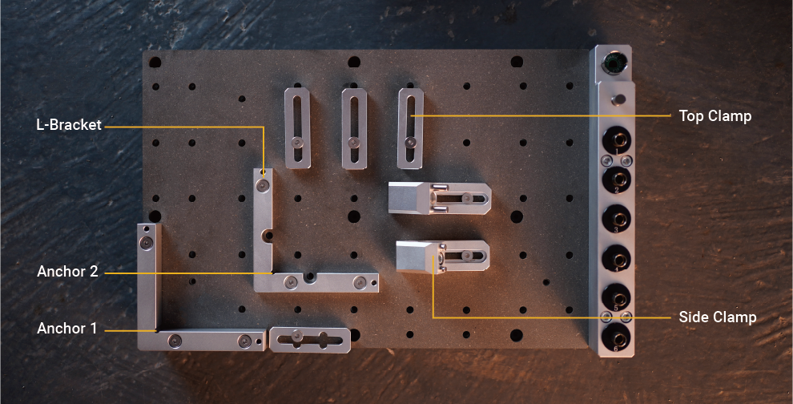
1. Brides en L : la Carvera fournit deux types de brides en L, une fine et une épaisse, comme indiqué sur la figure. La bride en L peut être fixée à l'un des deux points d'ancrage avec deux goupilles de positionnement de 4mm et trois vis M5 (la bride épaisse utilise des vis longues). Le coin inférieur gauche est l'ancrage 1 et la position centrale est l'ancrage 2. Le positionneur fin comporte deux ouvertures semi-circulaires ; vous pouvez y placer deux vis M5 pour fixer le coin inférieur gauche de la pièce.
2. Brides supérieures : la bride supérieure fixe généralement avec la bride en L fine les pièces de moins de 2 cm d'épaisseur. La bride supérieure à rainure en croix facilite l'utilisation des côtés longs pour fixer la pièce. Nous recommandons d'utiliser des cales à l'extrémité des brides supérieures pour fixer les pièces de plus de 1 cm.
3. Brides latérales : la bride latérale s'utilise généralement avec la bride en L épaisse pour fixer les pièces de plus de 2 cm d'épaisseur. Elle peut aussi être utilisée avec la bride supérieure pour fixer une pièce fine et usiner sa surface, comme indiqué sur la figure.
Remarque : la bride supérieure est assez fine; ne serrez donc pas trop les vis.
Remarque : si vous devez traverser une pièce, nous recommandons vivement de placer dessous un plateau martyr de 1-2mm d'épaisseur (comme celui fourni). Cela évitera d'endommager l'établi.
Remarque : choisissez des vis de longueur adaptée à chaque pièce; vous éviterez ainsi de rayer la plaque située sous l'établi.
Installateur de pince de fraise
Pour utiliser le mécanisme de changement d'outil automatique de la Carvera, vous devez employer l'installateur de colliers pour installer le collier lors du remplacement des fraises. L'installateur de colliers permet l'installation et le retrait. (Le collier est réutilisable.)
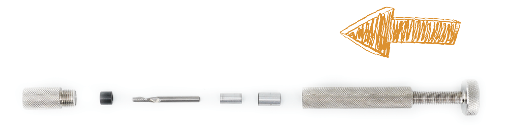
Installation de la pince : comme indiqué sur la figure, dévissez la partie avant de l'installateur. Insérez la pince et l'outil. Placez la bague métallique d'installation (compatible 3.175/4/6/6.35mm). Desserrez la vis de pression arrière, revissez la partie avant puis serrez la vis de pression arrière pour terminer l'installation. Une fois l'installation terminée, la pince est emmanchée sur l'outil, avec environ 12mm dépassant à l'arrière pour le bridage.
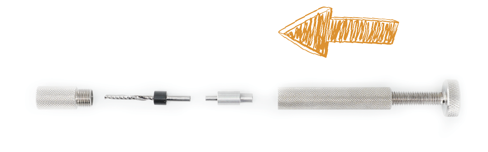
Retrait de la pince : comme indiqué sur la figure, dévissez la partie avant de l'installateur et placez l'outil avec la pince. Insérez le poussoir de retrait, desserrez la vis de pression arrière, revissez la partie avant, serrez la vis de pression arrière; le retrait est terminé.
Remarque : les fraises sont tranchantes; soyez prudent lors de l'installation et du retrait des pinces.
Module de collecte des poussières
L'évacuation des copeaux est une étape importante de la CNC, mais elle est généralement négligée par les machines CNC de bureau. La Carvera possède un système intégré de collecte et de filtration des poussières qui permet littéralement un usinage sans poussière pour les tâches légères et réduit fortement l'encrassement lors des travaux prolongés.
1. Cas d'utilisation : le facteur déterminant pour décider d'utiliser ou non le système de collecte des poussières est la présence d'interférences. Si le parcours d'usinage comporte des obstacles qui bloquent la jupe d'aspiration, ne l'utilisez pas. En général, la collecte des poussières peut être utilisée pour usiner des pièces fines et plates, comme des plaques. Nous suggérons de déplacer et de verrouiller la jupe d'aspiration dans sa position la plus haute lors de l'usinage de pièces épaisses et irrégulières. Retirez complètement la jupe d'aspiration lors de l'utilisation du quatrième axe.
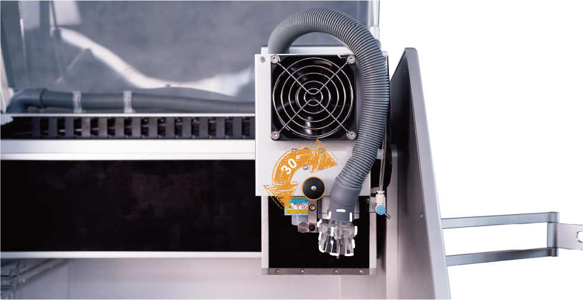
2. Verrouillage/déverrouillage : pour s'adapter à la fonction de changement d'outil automatique de la Carvera, nous avons conçu la jupe d'aspiration pour qu'elle puisse coulisser verticalement. Comme indiqué plus haut dans le manuel, tirez le bouton noir ; vous pouvez passer de l'état verrouillé à l'état déverrouillé en le tournant tous les 30 degrés.
3. Installation/retrait : lorsque la collecte des poussières n'est pas nécessaire, vous pouvez placer la jupe d'aspiration dans sa position la plus haute et la verrouiller, ou desserrer la vis à main qui la fixe au rail linéaire et retirer la jupe. Utilisez le support de tube comme indiqué sur la figure pour fixer le tuyau de poussière.
4. Bac à poussière : nettoyez le bac à poussière dès que le travail de fraisage est terminé.
5. Dérivation des poussières : le système intégré de collecte des poussières n'est pas très puissant et la capacité du bac est limitée ; la Carvera permet de dériver les poussières vers des appareils externes de collecte, comme un aspirateur :
5.1. Basculez l'extrémité du tuyau de poussière (en forme de L) vers le canal d'entrée de dérivation, comme indiqué.
5.2. Connectez votre aspirateur au canal de sortie de dérivation situé à l'arrière de la machine ; le diamètre intérieur est de 22mm.
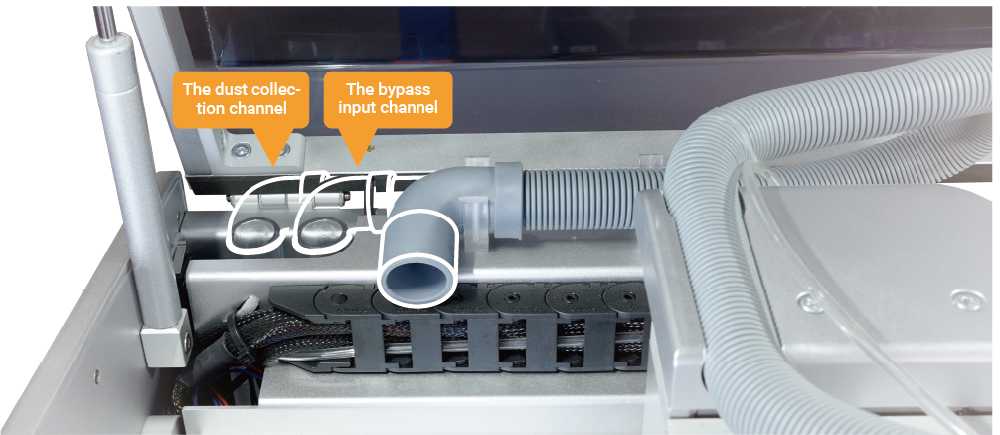
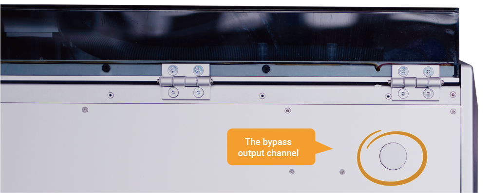
Remarque : ne verrouillez pas la jupe d'aspiration en bas afin de ne pas perturber la fonction de changement d'outil automatique.
Remarque : la puissance d'aspiration intégrée est limitée ; utilisez votre propre aspirateur pour nettoyer.
Remarque : lors de l'utilisation du quatrième axe, retirez la jupe d'aspiration et le bac à poussière pour éviter les interférences.
Module rotatif
1. Installation : comme indiqué sur la figure, fixez le module rotatif avec deux goupilles de positionnement de 4mm et six vis M5*20. Branchez le câble du moteur dans la prise à 4 broches située sur le côté gauche du plateau de la machine. Veuillez redémarrer la machine pour activer le module rotatif.
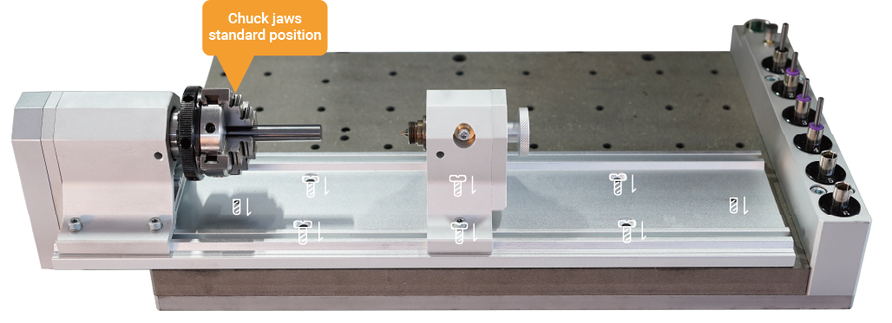
2. Assemblage des mors du mandrin : comme indiqué sur la figure, il existe deux positions d'assemblage. La position standard convient aux petites pièces et la position inversée aux pièces de plus grand diamètre. La position par défaut est inversée pour s'adapter à notre exemple de quatrième axe. Vous pouvez la modifier en position standard selon vos besoins. L'ordre d'assemblage doit suivre les numéros « 1, 2, 3, 4 » marqués sur les mors.
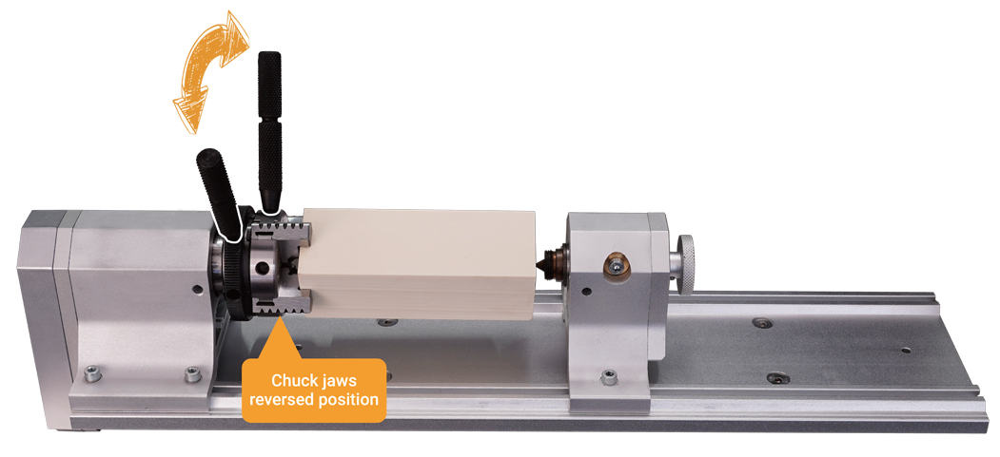
3. Workpiece holding:
3.1. Loosen the locking screw at position A on the tail stock as shown in the figure, adjust the tail stock tip to the right side by turning the knob counterclockwise.
3.2. Loosen the 2 fixing screws at position B.
3.3. Use two wrenches to adjust the opening size of the chuck and place the workpiece in.
3.4. Align the tail stock tip to the end of the workpiece, and tighten the two fixing screws at position B.（We highly recommend drilling a small hole at the end of the block tail for better holding strength, especially for hard materials.)
3.5. Use two wrenches to tighten the chuck, push the tail stock tip close to the workpiece by turning the knob clockwise, and lock the locking screw at position A. (Don't push too hard to the workpiece, it's ok when there is no gap and backlash, better drill a small hole first at the center of the workpiece tail for fixing.)
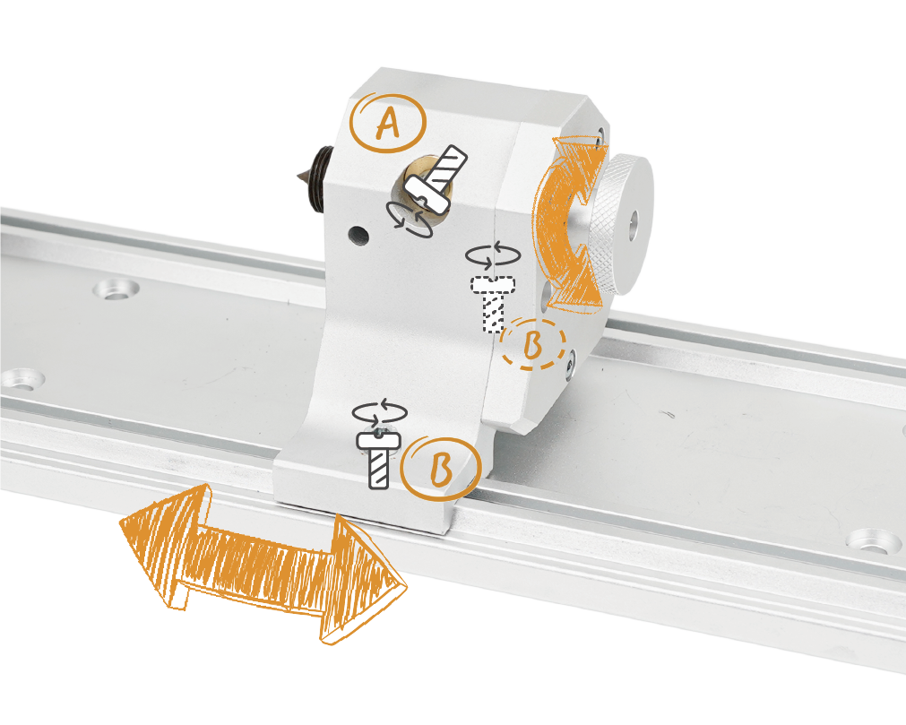
4. Software Settings: The right edge of the headstock is the reference point for setting the working coordinates of the rotary module. When performing rotary machining, you only need to set the distance between the X axis and the reference point and set Y to 0.
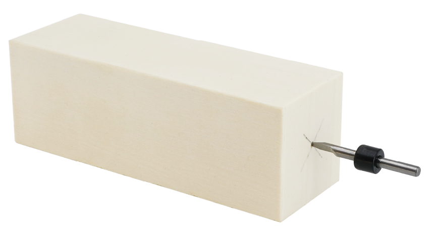
Note: Usually, you don’t need to move the head stock, because the reference point on the head stock should be fixed for precise positioning. Ensure that the holding position/size/G-Code/work coordinate of the workpiece match with each other, otherwise it may cause damage to the module or tool bit.
Installateur de pince de broche
La Carvera est fournie avec une pince d'outil de 1/8 pouce (3.175mm). Il s'agit de la taille couramment utilisée pour les machines CNC de bureau et elle répond à la plupart des besoins d'usinage. Pour les tailles spéciales comme 4mm/6mm/6.35mm, vous pouvez changer la pince d'outil et l'arbre arrière du palpeur sans fil.
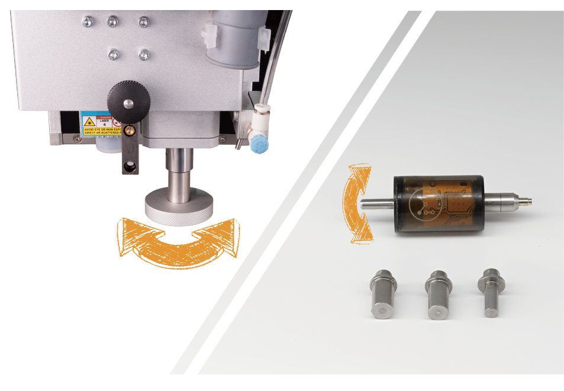
1. Changer la pince de broche : utilisez le logiciel de contrôle pour déposer l'outil actuel, insérez l'installateur de pince de broche dans la pince actuelle et tournez dans le sens antihoraire pour retirer cette pince. Installez la nouvelle pince de la même manière (ne serrez pas trop pour faciliter un futur remplacement).
2. Changer l'arbre arrière du palpeur sans fil : tournez l'arbre arrière du palpeur sans fil dans le sens antihoraire pour le retirer. Utilisez la même méthode pour installer le nouvel arbre arrière (ne serrez pas trop pour faciliter un futur remplacement).
Module laser
La machine Carvera possède un module laser à diode intégré de 2.5W, qui peut graver le bois, le plastique et d'autres matériaux et complète parfaitement la fonction CNC. Par défaut, vous n'avez pas besoin de régler la mise au point ou le décalage du module laser, car nous l'avons fait avant sa sortie d'usine. Toutefois, si vous rencontrez un problème avec ces réglages, nous expliquerons la méthode de réglage détaillée dans le tutoriel correspondant sur notre site web.
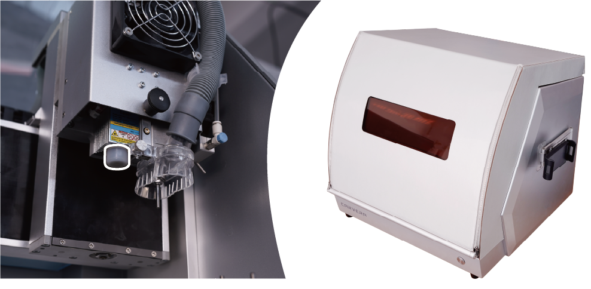
La machine Carvera dispose d'un capot de protection laser optionnel qui peut réduire considérablement le rayonnement laser. Il convient aux personnes qui prévoient d'utiliser souvent la fonction laser dans des lieux facilement accessibles aux enfants ou aux personnes présentes. Vous pouvez choisir cet accessoire dans notre boutique en ligne.
Remarque : un capot de protection de l'objectif est installé par défaut. Veillez à le retirer avant d'utiliser la fonction laser et à le remettre en place lorsque vous ne l'utilisez pas.
Remarque : pour utiliser la fonction laser de la Carvera, vous devez d'abord passer en mode laser. Les commandes permettant d'entrer dans ce mode et d'en sortir sont M321 et M322 ; veuillez les ajouter au post-traitement du G-code.
Note: Always wear laser protection goggles when using laser function.